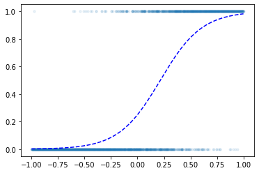

import numpy as np
import tensorflow as tf
import tensorflow.experimental.numpy as tnp 빅데이터분석 특강 중간고사
tnp.experimental_enable_numpy_behavior()import matplotlib.pyplot as plt 1. 경사하강법과 tf.GradientTape()의 사용방법 (30점)
(1) 아래는 \(X_i \overset{iid}{\sim} N(3,2^2)\) 를 생성하는 코드이다.
tf.random.set_seed(43052)
x= tnp.random.randn(10000)*2+3
x2022-04-25 20:47:56.696349: I tensorflow/stream_executor/cuda/cuda_gpu_executor.cc:939] successful NUMA node read from SysFS had negative value (-1), but there must be at least one NUMA node, so returning NUMA node zero<tf.Tensor: shape=(10000,), dtype=float64, numpy=
array([ 4.12539849, 5.46696729, 5.27243374, ..., 2.89712332,
5.01072291, -1.13050477])>함수 \(L(\mu,\sigma)\)을 최대화하는 \((\mu,\sigma)\)를 tf.GradeintTape()를 활용하여 추정하라. (경사하강법 혹은 경사상승법을 사용하고 \(\mu\)의 초기값은 2로 \(\sigma\)의 초기값은 3으로 설정할 것)
\[L(\mu,\sigma)=\prod_{i=1}^{n}f(x_i), \quad f(x_i)=\frac{1}{\sqrt{2\pi}\sigma}e^{-\frac{1}{2}(\frac{x_i-\mu}{\sigma})^2}\]
N = 10000y_true=(x-3)**2/2**2epsilon = tnp.random.randn(N)*0.5
y=(x-3)**2/2**2+epsilonx.shape, y.shape(TensorShape([10000]), TensorShape([10000]))beta = tf.Variable(2.0)
alpha = tf.Variable(3.0)for epoc in range(1000):
with tf.GradientTape() as tape:
yhat = (x-beta)**2/(alpha**2)
loss = tf.reduce_sum((y-yhat)**2)/N
slope0,slope1 = tape.gradient(loss,[beta,alpha])
beta.assign_sub(alpha * slope0)
alpha.assign_sub(alpha * slope1)beta, alpha(<tf.Variable 'Variable:0' shape=() dtype=float32, numpy=161.78185>,
<tf.Variable 'Variable:0' shape=() dtype=float32, numpy=159.62784>)yhat=(x-beta)**2/(alpha**2)plt.plot(x,y,'.')
plt.plot(x,yhat,'r.')(2) 아래는 \(X_i \overset{iid}{\sim} Ber(0.8)\)을 생성하는 코드이다.
tf.random.set_seed(43052)
x= tf.constant(np.random.binomial(1,0.8,(10000,)))
x<tf.Tensor: shape=(10000,), dtype=int64, numpy=array([0, 1, 1, ..., 1, 0, 1])>함수 \(L(p)\)을 최대화하는 \(p\)를 tf.GradeintTape()를 활용하여 추정하라. (경사하강법 혹은 경사상승법을 사용하고 \(p\)의 초기값은 0.3으로 설정할 것)
\[L(\mu,\sigma)=\prod_{i=1}^{n}f(x_i), \quad f(x_i)=p^{x_i}(1-p)^{1-x_i}\]
N = 10000y_true=(x-0.8)**2epsilon = tnp.random.randn(N)*0.5
y=(x-0.8)**2+epsilonx.shape, y.shape(TensorShape([10000]), TensorShape([10000]))beta = tf.Variable(2.0)
alpha = tf.Variable(3.0)for epoc in range(1000):
with tf.GradientTape() as tape:
yhat = (x-beta)**2/(alpha**2)
loss = tf.reduce_sum((y-yhat)**2)/N
slope0,slope1 = tape.gradient(loss,[beta,alpha])
beta.assign_sub(alpha * slope0)
alpha.assign_sub(alpha * slope1)beta, alpha(<tf.Variable 'Variable:0' shape=() dtype=float32, numpy=1.3362731>,
<tf.Variable 'Variable:0' shape=() dtype=float32, numpy=1.6516612>)yhat=(x-beta)**2/(alpha**2)plt.plot(x,y,'.')
plt.plot(x,yhat,'r.')(3) 아래의 모형에 따라서 \(\{Y_i\}_{i=1}^{10000}\)를 생성하는 코드를 작성하라. - \(Y_i \overset{iid}{\sim} N(\mu_i,1)\) - \(\mu_i = \beta_0 + \beta_1 x_i = 0.5 + 2 x_i\) , where \(x_i = \frac{i}{10000}\)
함수 \(L(\beta_0,\beta_1)\)을 최대화하는 \((\beta_0,\beta_1)\)를 tf.GradeintTape()를 활용하여 추정하라. (경사하강법 혹은 경사상승법을 사용하고 \(\beta_0,\beta_1\)의 초기값은 모두 1로 설정할 것)
\[L(\beta_0,\beta_1)=\prod_{i=1}^{n}f(y_i), \quad f(y_i)=\frac{1}{\sqrt{2\pi}}e^{-\frac{1}{2}(y_i-\mu_i)^2}, \quad \mu_i=\beta_0+\beta_1 x_i\]
2. 회귀분석의 이론적해와 tf.keras.optimizer 이용방법 (20점)
아래와 같은 선형모형을 고려하자.
\[y_i = \beta_0 + \beta_1 x_i +\epsilon_i.\]
이때 오차항은 정규분포로 가정한다. 즉 \(\epsilon_i \overset{iid}{\sim} N(0,\sigma^2)\)라고 가정한다.
관측데이터가 아래와 같을때 아래의 물음에 답하라.
x= tnp.array([20.1, 22.2, 22.7, 23.3, 24.4, 25.1, 26.2, 27.3, 28.4, 30.4])
y= tnp.array([55.4183651 , 58.19427589, 61.23082496, 62.31255873, 63.1070028 ,
63.69569103, 67.24704918, 71.43650092, 73.10130336, 77.84988286])
# X= tnp.array([[1.0, 20.1], [1.0, 22.2], [1.0, 22.7], [1.0, 23.3], [1.0, 24.4],
# [1.0, 25.1], [1.0, 26.2], [1.0, 27.3], [1.0, 28.4], [1.0, 30.4]])(1) MSE loss를 최소화 하는 \(\beta_0,\beta_1\)의 해석해를 구하라.
N = 10y = y.reshape(N,1)X = tf.stack([tf.ones(N,dtype='float64'),x],axis=1)y=y.reshape(N,1)
x=x.reshape(N,1)
y.shape, X.shape(TensorShape([10, 1]), TensorShape([10, 2]))tf.linalg.inv(X.T @ X) @ X.T @ y<tf.Tensor: shape=(2, 1), dtype=float64, numpy=
array([[9.94457323],
[2.21570461]])>y_hat=9.94457323+2.21570461*xplt.plot(x,y,'.')
plt.plot(x,y_hat,'r--')(2) 경사하강법과 MSE loss의 도함수를 이용하여 \(\beta_0,\beta_1\)을 추정하라.
주의 tf.GradeintTape()를 이용하지 말고 MSE loss의 해석적 도함수를 사용할 것.
N = 10y=y.reshape(N,1)
X=tf.stack([tf.ones(N,dtype=tf.float64),x],axis=1)
y.shape,X.shape(TensorShape([10, 1]), TensorShape([10, 2]))y=y.reshape(N,1)
X.shape, y.shape(TensorShape([10, 2]), TensorShape([10, 1]))beta_hat = tnp.array([9,2]).reshape(2,1)
beta_hat<tf.Tensor: shape=(2, 1), dtype=int64, numpy=
array([[9],
[2]])>alpha = 0.001for epoc in range(1000):
slope = (-2*X.T @ y + 2*X.T@ X @ beta_hat)/N
beta_hat = beta_hat - alpha * slopebeta_hat<tf.Tensor: shape=(2, 1), dtype=float64, numpy=
array([[9.03545357],
[2.25155218]])>y_hat=9.03545357+2.25155218*xplt.plot(x,y,'.')
plt.plot(x,y_hat,'r--')
(3) tf.keras.optimizers의 apply_gradients()를 이용하여 \(\beta_0,\beta_1\)을 추정하라.
opt.apply_gradients([(slope,beta_hat)])
beta<tf.Variable 'Variable:0' shape=() dtype=float32, numpy=1.3362731>X.shape,y.shape(TensorShape([10, 2]), TensorShape([10, 1]))beta_hat = tf.Variable(tnp.array([9,2],dtype='float64').reshape(2,1))
beta_hat<tf.Variable 'Variable:0' shape=(2, 1) dtype=float64, numpy=
array([[9.],
[2.]])>alpha=0.05
opt = tf.keras.optimizers.SGD(alpha)for epoc in range(1000):
with tf.GradientTape() as tape:
yhat = X@beta_hat
loss = (y-yhat).T @ (y-yhat) / N
slope = tape.gradient(loss,beta_hat)
opt.apply_gradients( [(slope,beta_hat)] )beta_hat<tf.Variable 'Variable:0' shape=(2, 1) dtype=float64, numpy=
array([[nan],
[nan]])>y_hat=9.03545358+2.25155218*xplt.plot(x,y,'.')
plt.plot(x,y_hat,'r--')(4) tf.keras.optimizers의 minimize()를 이용하여 \(\beta_0,\beta_1\)을 추정하라.
mse_fn = tf.losses.MeanSquaredError()
mse_fn(y,yhat)<tf.Tensor: shape=(), dtype=float64, numpy=nan>mseloss_fn=tf.losses.MeanSquaredError()y=y.reshape(N,1)
X.shape,y.shape(TensorShape([10, 2]), TensorShape([10, 1]))beta_hat = tf.Variable(tnp.array([9,2],dtype='float64').reshape(2,1))
beta_hat<tf.Variable 'Variable:0' shape=(2, 1) dtype=float64, numpy=
array([[9.],
[2.]])>alpha=0.0015
opt = tf.keras.optimizers.SGD(alpha) mseloss_fn(y.reshape(-1),yhat.reshape(-1))<tf.Tensor: shape=(), dtype=float64, numpy=nan>def loss_fn():
yhat= X@beta_hat
loss = mseloss_fn(y.reshape(-1),yhat.reshape(-1))
return lossfor epoc in range(1000):
opt.minimize(loss_fn,beta_hat)beta_hat<tf.Variable 'Variable:0' shape=(2, 1) dtype=float64, numpy=
array([[9.04793931],
[2.25105986]])>y_hat=9.03545358+2.25155218*xplt.plot(x,y,'.')
plt.plot(x,y_hat,'r--')
3. keras를 이용한 풀이 (30점)
(1) 아래와 같은 모형을 고려하자.
\[y_i= \beta_0 + \sum_{k=1}^{5} \beta_k \cos(k t_i)+\epsilon_i, \quad i=0,1,\dots, 999\]
여기에서 \(t_i=\frac{2\pi i}{1000}\) 이다. 그리고 \(\epsilon_i \sim i.i.d~ N(0,\sigma^2)\), 즉 서로 독립인 표준정규분포에서 추출된 샘플이다. 위의 모형에서 아래와 같은 데이터를 관측했다고 가정하자.
np.random.seed(43052)
t= np.array(range(1000))* np.pi/1000
y = -2+ 3*np.cos(t) + 1*np.cos(2*t) + 0.5*np.cos(5*t) + np.random.randn(1000)*0.2
plt.plot(t,y,'.',alpha=0.2)
tf.keras를 이용하여 \(\beta_0,\dots,\beta_5\)를 추정하라. (\(\beta_0,\dots,\beta_5\)의 참값은 각각 -2,3,1,0,0,0.5 이다)
X = np.stack([np.ones(1000),np.cos(1*t),np.cos(2*t),np.cos(3*t),np.cos(4*t),np.cos(5*t)],axis=1)
y = y.reshape(1000,1)net = tf.keras.Sequential()
net.add(tf.keras.layers.Dense(1,use_bias=False))
net.compile(tf.optimizers.SGD(0.1), loss='mse')
net.fit(X,y,epochs=30, batch_size=N)Epoch 1/30
100/100 [==============================] - 0s 790us/step - loss: 0.2753
Epoch 2/30
100/100 [==============================] - 0s 738us/step - loss: 0.0374
Epoch 3/30
100/100 [==============================] - 0s 709us/step - loss: 0.0378
Epoch 4/30
100/100 [==============================] - 0s 718us/step - loss: 0.0375
Epoch 5/30
100/100 [==============================] - 0s 710us/step - loss: 0.0378
Epoch 6/30
100/100 [==============================] - 0s 753us/step - loss: 0.0377
Epoch 7/30
100/100 [==============================] - 0s 806us/step - loss: 0.0369
Epoch 8/30
100/100 [==============================] - 0s 830us/step - loss: 0.0373
Epoch 9/30
100/100 [==============================] - 0s 831us/step - loss: 0.0372
Epoch 10/30
100/100 [==============================] - 0s 868us/step - loss: 0.0379
Epoch 11/30
100/100 [==============================] - 0s 831us/step - loss: 0.0372
Epoch 12/30
100/100 [==============================] - 0s 827us/step - loss: 0.0372
Epoch 13/30
100/100 [==============================] - 0s 846us/step - loss: 0.0374
Epoch 14/30
100/100 [==============================] - 0s 820us/step - loss: 0.0379
Epoch 15/30
100/100 [==============================] - 0s 926us/step - loss: 0.0375
Epoch 16/30
100/100 [==============================] - 0s 949us/step - loss: 0.0373
Epoch 17/30
100/100 [==============================] - 0s 833us/step - loss: 0.0379
Epoch 18/30
100/100 [==============================] - 0s 706us/step - loss: 0.0377
Epoch 19/30
100/100 [==============================] - 0s 700us/step - loss: 0.0380
Epoch 20/30
100/100 [==============================] - 0s 744us/step - loss: 0.0381
Epoch 21/30
100/100 [==============================] - 0s 689us/step - loss: 0.0370
Epoch 22/30
100/100 [==============================] - 0s 733us/step - loss: 0.0377
Epoch 23/30
100/100 [==============================] - 0s 733us/step - loss: 0.0379
Epoch 24/30
100/100 [==============================] - 0s 719us/step - loss: 0.0377
Epoch 25/30
100/100 [==============================] - 0s 681us/step - loss: 0.0377
Epoch 26/30
100/100 [==============================] - 0s 700us/step - loss: 0.0380
Epoch 27/30
100/100 [==============================] - 0s 718us/step - loss: 0.0381
Epoch 28/30
100/100 [==============================] - 0s 689us/step - loss: 0.0375
Epoch 29/30
100/100 [==============================] - 0s 763us/step - loss: 0.0376
Epoch 30/30
100/100 [==============================] - 0s 768us/step - loss: 0.0379<keras.callbacks.History at 0x7fe354554850>net.weights[<tf.Variable 'dense/kernel:0' shape=(6, 1) dtype=float32, numpy=
array([[-1.9798379 ],
[ 3.0361695 ],
[ 1.0182086 ],
[-0.00371684],
[-0.00969306],
[ 0.4876245 ]], dtype=float32)>](2) 아래와 같은 모형을 고려하자.
\[y_i \sim Ber(\pi_i), ~ \text{where} ~ \pi_i=\frac{\exp(w_0+w_1x_i)}{1+\exp(w_0+w_1x_i)}\]
위의 모형에서 관측한 데이터는 아래와 같다.
tf.random.set_seed(43052)
x = tnp.linspace(-1,1,2000)
y = tf.constant(np.random.binomial(1, tf.nn.sigmoid(-1+5*x)),dtype=tf.float64)
plt.plot(x,y,'.',alpha=0.05)
tf.keras를 이용하여 \(w_0,w_1\)을 추정하라. (참고: \(w_0, w_1\)에 대한 참값은 -1과 5이다.)
x.shape, y.shape(TensorShape([2000]), TensorShape([2000]))x=x.reshape(2000,1)
x.shape, y.shape(TensorShape([2000, 1]), TensorShape([2000]))net = tf.keras.Sequential()
net.add(tf.keras.layers.Dense(1,activation='sigmoid'))
bceloss_fn = lambda y,yhat: -tf.reduce_mean(y*tnp.log(yhat) + (1-y)*tnp.log(1-yhat))
net.compile(loss=bceloss_fn, optimizer=tf.optimizers.SGD(0.1))
net.fit(x,y,epochs=10000,verbose=0,batch_size=2000)<keras.callbacks.History at 0x7fe354356980>net.weights[<tf.Variable 'dense_1/kernel:0' shape=(1, 1) dtype=float32, numpy=array([[5.09306]], dtype=float32)>,
<tf.Variable 'dense_1/bias:0' shape=(1,) dtype=float32, numpy=array([-1.0963831], dtype=float32)>]plt.plot(x,y,'.',alpha=0.1)
plt.plot(x,net(x),'--b')
4. Piecewise-linear regression (15점)
아래의 모형을 고려하자.
model: \(y_i=\begin{cases} x_i +0.3\epsilon_i & x\leq 0 \\ 3.5x_i +0.3\epsilon_i & x>0 \end{cases}\)
아래는 위의 모형에서 생성한 샘플이다.
## data
np.random.seed(43052)
N=100
x= np.linspace(-1,1,N).reshape(N,1)
y= np.array(list(map(lambda x: x*1+np.random.normal()*0.3 if x<0 else x*3.5+np.random.normal()*0.3,x))).reshape(N,1)(1) 다음은 \((x_i,y_i)\)를 아래와 같은 아키텍처로 적합시키는 코드이다.
- $ = _0+_1x $
tf.random.set_seed(43054)
net = tf.keras.Sequential()
net.add(tf.keras.layers.Dense(1))
net.compile(optimizer=tf.optimizers.SGD(0.1),loss='mse')
net.fit(x,y,batch_size=N,epochs=1000,verbose=0) # numpy로 해도 돌아감<keras.callbacks.History at 0x7fe3542e8e80>케라스에 의해 추정된 \(\hat{\beta}_0,\hat{\beta}_1\)을 구하라.
net.weights[<tf.Variable 'dense_2/kernel:0' shape=(1, 1) dtype=float32, numpy=array([[2.2616348]], dtype=float32)>,
<tf.Variable 'dense_2/bias:0' shape=(1,) dtype=float32, numpy=array([0.6069048], dtype=float32)>]plt.plot(x,y,'.',alpha=0.5)
plt.plot(x,net(x),'--')(2) 다음은 \((x_i,y_i)\)를 아래와 같은 아키텍처로 적합시키는 코드이다.
- \(\boldsymbol{u}= x\boldsymbol{W}^{(1)}+\boldsymbol{b}^{(1)}\)
- \(\boldsymbol{v}= \text{relu}(u)\)
- \(y= \boldsymbol{v}\boldsymbol{W}^{(2)}+b^{(2)}\)
tf.random.set_seed(43056)
## 1단계
net = tf.keras.Sequential()
net.add(tf.keras.layers.Dense(2))
net.add(tf.keras.layers.Activation('relu'))
net.add(tf.keras.layers.Dense(1))
net.compile(optimizer=tf.optimizers.SGD(0.1),loss='mse')
net.fit(x,y,epochs=1000,verbose=0,batch_size=N)<keras.callbacks.History at 0x7fe3541d1090>\({\boldsymbol u}\)를 이용하여 \({\boldsymbol v}\)를 만드는 코드와 \({\boldsymbol v}\)를 이용하여 \(y\)를 만드는 코드를 작성하라.
net.weights[<tf.Variable 'dense_3/kernel:0' shape=(1, 2) dtype=float32, numpy=array([[1.9178674, 0.7250776]], dtype=float32)>,
<tf.Variable 'dense_3/bias:0' shape=(2,) dtype=float32, numpy=array([ 0.33402315, -0.72684675], dtype=float32)>,
<tf.Variable 'dense_4/kernel:0' shape=(2, 1) dtype=float32, numpy=
array([[ 1.8141525 ],
[-0.67835057]], dtype=float32)>,
<tf.Variable 'dense_4/bias:0' shape=(1,) dtype=float32, numpy=array([-0.60076195], dtype=float32)>]W1= tf.Variable(tnp.array([[-0.03077251, 1.8713338 ]]))
b1= tf.Variable(tnp.array([-0.04834982, 0.3259186 ]))
W2= tf.Variable(tnp.array([[0.65121335],[1.8592643 ]]))
b2= tf.Variable(tnp.array([-0.60076195])) with tf.GradientTape() as tape:
u = tf.constant(x) @ W1 + b1
v = tf.nn.relu(u)
yhat = v@W2 + b2
loss = tf.losses.mse(y,yhat) tape.gradient(loss,[W1,b1,W2,b2])[<tf.Tensor: shape=(1, 2), dtype=float64, numpy=array([[ 0.00000000e+00, -4.77330119e-05]])>,
<tf.Tensor: shape=(2,), dtype=float64, numpy=array([0.0000000e+00, 3.1478608e-06])>,
<tf.Tensor: shape=(2, 1), dtype=float64, numpy=
array([[ 0.00000000e+00],
[-4.74910706e-05]])>,
<tf.Tensor: shape=(1,), dtype=float64, numpy=array([-2.43031263e-05])>]plt.plot(x,y,'.')
plt.plot(x,net(x),'--')(3) 아래는 (1)-(2)번 모형에 대한 discussion이다. 올바른 것을 모두 골라라.
(곤이) (2) 모형은 활성화함수로 relu를 사용하였다. (O)
(철용) (1) 모형에서 추정해야할 파라메터의 수는 2개이다.
(아귀) (2) 모형이 (1) 모형보다 복잡한 모형이다. (X)
(짝귀) (1) 의 모형은 오버피팅의 위험이 있다. (O)
5. 다음을 잘 읽고 참과 거짓을 판단하라. (5점)
(1) 적절한 학습률이 선택된다면, 경사하강법은 손실함수가 convex일때 언제 전역최소해를 찾을 수 있다. (참)
(2) tf.GradeintTape()는 경사하강법을 이용하여 최적점을 찾아주는 tool이다. (참)
(3) 학습률이 크다는 것은 파라메터는 1회 업데이트 하는 양이 크다는 것을 의미한다. (참)
(4) 학습률이 크면 학습파라메터의 수렴속도가 빨라지지만 때때로 과적합에 빠질 수도 있다. (참)
(5) 단순회귀분석에서 MSE loss를 최소화 하는 해는 경사하강법을 이용하지 않아도 해석적으로 구할 수 있다. (거짓)